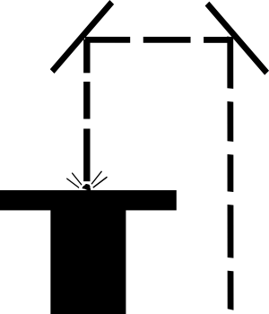

← Will Makes Things.

Just Sand
Inspired by a short story from The Cyberiad, Sophia Brueckner and I are engraving the words "JUST SAND" on a grain of sand.
We use the Excimer Laser to etch the words onto the grain of sand. The grain of sand is less than 1mm diameter.


We can image the resulting grain of sand with the Micro X-ray CT scanner.